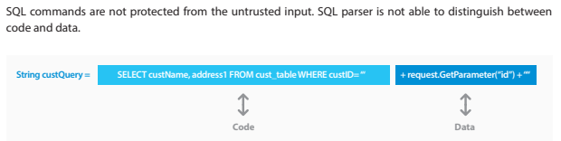

1. SQL injection
- The different types of SQL Injections
- Retrieving hidden data, where you can modify an SQL query to return additional results.
- Subverting application logic, where you can change a query to interfere with the application's logic.
- UNION attacks, where you can retrieve data from different database tables.
- Examining the database, where you can extract information about the version and structure of the database.
- Blind SQL injection, where the results of a query you control are not returned in the application's responses.
- Blind SQL injection is a type of attack that asks the database true or false questions and determines the answer based on the applications response
- Effectively the attacker uses SQL queries to determine what error responses are returned for valid SQL, and which responses are returned for invalid SQL
- Blind SQL injections can also use timings instead of error messages, e.g. if invalid SQL takes 2 seconds to respond, but valid SQL returns in 0.5 seconds, the attacker can use this information

- Using string concatenation to generate a SQL statement is very common in legacy applications where developers were not considering security. The issue is this coding technique does not tell the parser which part of the statement is code and which part is data